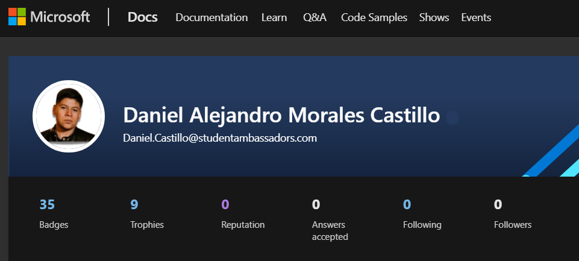

¿Qué es Microsoft Learn Student Ambassadors?
La comunidad de Microsoft Learn Student Ambassadors es para estudiantes, como usted, que desean usar la tecnología para resolver problemas del mundo real con compañeros de ideas afines, establecerse como mentores y líderes en su comunidad y amplificar su impacto.
Los estudiantes embajadores tienen la oportunidad de conectarse con otros estudiantes de todo el mundo (¡de 102 países y contando!), fomentar sus propias comunidades en línea, obtener capacitación y obtener certificaciones, y enfrentar desafíos prácticos, todo mientras desarrollan habilidades técnicas y sociales clave para ayudarlos a triunfar. También pueden lograr un progreso significativo en los temas socialmente significativos que les preocupan.
Postulate
Microsoft Learn Student Ambassador
Lo primero que tuve que hacer fue mandar mi vídeo de postulación para poder entrar, una vez evaluado me dieron respuesta donde me aceptaron en el prorgrama y ser parte de él desde Enero de 2022, para mi fue una alegría muy grande porque siempre quise pertenecer a una comunidad donde pudiera sentirme comodo, encontrar personas excelentes en el mundo tecnologico y aprender de ellos.
Doy gracias también a Microsoft, a los MLSA y a todo el equipo que hacen posible estos programas que benefician a miles de estudiantes alrededor del mundo, que con las herramientas necesarias para poder aprender mucho cada día.

Mi experiencia siendo un MLSA
Cuando entré tenía algo de nervios, emoción y muchos sentimientos encontrados, para mi esto fue una experiencia nueva que por supuesto me ha ayudado a desarrollar muchas habilidades, tanto blandas como técnicas.
Para mi el echo de juntarme con personas inicialmente desconocidas para trabajar en eventos, proyectos, llamadas, ha sido increíble porque hasta entrar aquí era alguien muy introvertido me ha ayudado mucho en esa parte, en poder desenvolverme mejor en ese ámbito, así como asistir a charlas muy interesantes, donde compañeros embajadores comparten sus conocimientos y experiencias y poder aprender de ellos también.
Me gusta tener la oportunidad de contribuir en la comunidad de cualquier manera, ayudar en eventos en los diferentes equipos que se organizan para llevarlos a cabo, poder ayudar en partes técnicas como una página web o en transmisiones, sin contar el trabajo que realizamos en equipo, una parte muy importante hoy en día para la parte profesional.
Aprendizaje
He podido aprender mucho sobre tecnologías de Microsoft, la más importante y creo que de la que más he sacado provecho y aprendizaje ha sido de la nube de Microsoft, Microsoft Azure, donde he deplegado proyectos y me pude certificar.

Así como de distintas herramientas de Microsoft, haciendo uso de Microsoft Learning para seguir aprendiendo

Eventos MLSA
Como MLSA he tenido oportunidad de dar charlas sobre temas téncologicos, ha sido una parte muy bonita, donde nuevamente lo digo he aprendido bastante y me ha permitido hacer cosas nuevas, diferentes de lo que estaba acostumbrado.
En esa ocasión di una charla sobre las estructuras de datos, donde explique su parte teórica y formas de programarlas en Python

Crecimiento
Finalmente me queda decir que estoy muy orgulloso, feliz y con muchas ganas de seguir aprendiendo y avanzando en el programa.
.png)